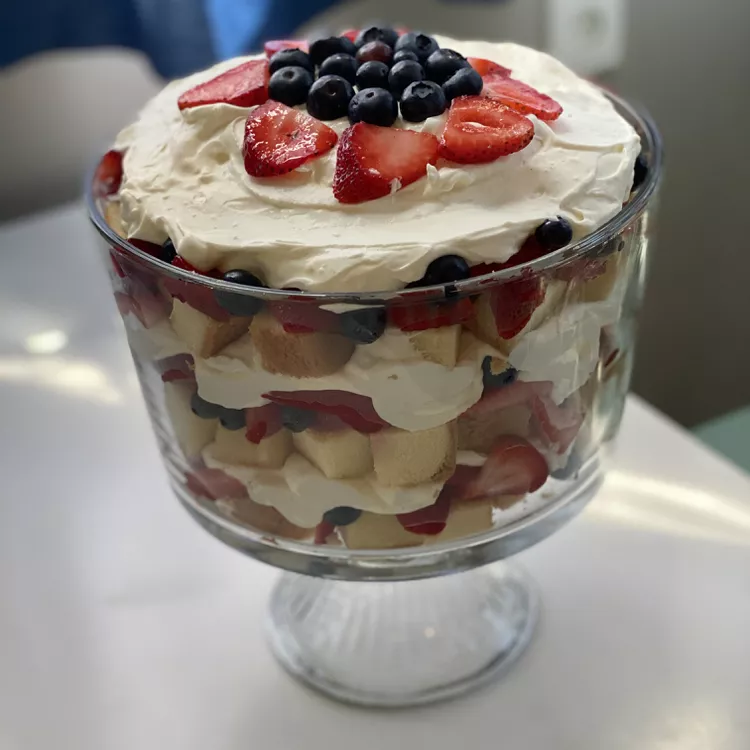

All American Trifle

Description
This is a creamy, fruity, heavenly dessert. A trifle perfect for Fourth of July or a barbecue. I've been told it's like a super-charged strawberry shortcake.
Ingredients
- 3 pounds fresh strawberries, hulled and sliced
- ¼ cup white sugar
- 1 quart heavy cream
- 1 (6 ounce) container lemon yogurt
- 1 (3.3 ounce) package instant white chocolate pudding mix
- 2 tablespoons coconut-flavored rum, or to taste, divided (Optional)
- 2 (16 ounce) prepared pound cakes, cubed
- 2 pints fresh blueberries, or as needed
Steps
- Sprinkle strawberries with sugar in a bowl; stir to distribute sugar, and set aside.
- Chill a large metal mixing bowl and beaters from an electric mixer.
- Pour cream into the chilled mixing bowl, and add lemon yogurt, pudding mix, and about 1 tablespoon of coconut rum; beat until fluffy with an electric mixer set on medium speed.
- Spread a layer of pound cake cubes into the bottom of a glass 10x15-inch baking dish, and sprinkle cubes with remaining tablespoon coconut rum. Cover pound cake with a layer of strawberries; sprinkle blueberries over strawberries. Spread a thick layer of whipped cream over the berries.
- Repeat the layers several times, ending with a layer of strawberries sprinkled with blueberries and reserving about 1 cup of whipped cream; top the trifle with dollops of whipped cream to serve. Refrigerate leftovers.